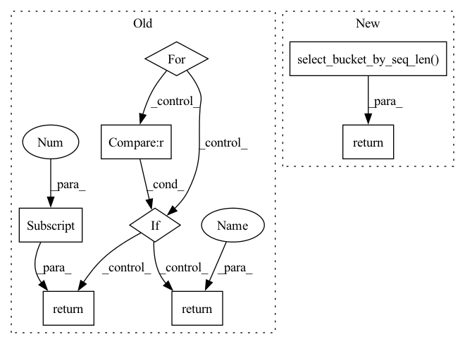

Pattern ID :25347
Before Change
)
current_seq_len = len(tokens)
for pipeline in pipelines:
if pipeline.sequence_length > current_seq_len :
return pipeline
return pipelines[-1]
def parse_labels(self, labels: Union[None, List[str], str]) -> List[str]:
If given a string of comma separated labels, parses values into a listAfter Change
truncation=False,
)
input_seq_len = max(map(len, tokens["input_ids"]))
return TransformersPipeline.select_bucket_by_seq_len( input_seq_len, pipelines)
def parse_labels(self, labels: Union[None, List[str], str]) -> List[str]:
If given a string of comma separated labels, parses values into a listIn pattern: SUPERPATTERN
Frequency: 3
Non-data size: 8
Instances Fragment ID: 77556070
Project Name: neuralmagic/deepsparse
Commit Name: 8b3426d2ff2551b0c07faad1a8c79797d314b633
Time: 2022-08-29
Author: 109536191+corey-nm@users.noreply.github.com
File Name: src/deepsparse/transformers/pipelines/zero_shot_text_classification.py
M Class Name: ZeroShotTextClassificationPipelineBase
N Class Name: ZeroShotTextClassificationPipelineBase
M Method Name: route_input_to_bucket(0)
N Method Name: route_input_to_bucket(3)
M Parent Class: TransformersPipeline
N Parent Class: TransformersPipeline
M File Name: src/deepsparse/transformers/pipelines/zero_shot_text_classification.py
N File Name: src/deepsparse/transformers/pipelines/zero_shot_text_classification.py
M Start Line: 303
M End Line: 315
N Start Line: 303
N End Line: 311
Before Change
f"{type(input_schema.inputs)}"
)
for pipeline in pipelines:
if pipeline.sequence_length > current_seq_len :
return pipeline
return pipelines[-1]
// utilities below adapted from transformers
def _gather_pre_entities(After Change
truncation=False,
)
input_seq_len = len(tokens)
return TransformersPipeline.select_bucket_by_seq_len( input_seq_len, pipelines)
// utilities below adapted from transformers
def _gather_pre_entities( Fragment ID: 77556069
Project Name: neuralmagic/deepsparse
Commit Name: 20f708e7d739d5395b74dcbdcca1e48811d4bda1
Time: 2022-07-28
Author: rahul@neuralmagic.com
File Name: src/deepsparse/transformers/pipelines/token_classification.py
M Class Name: TokenClassificationPipeline
N Class Name: TokenClassificationPipeline
M Method Name: route_input_to_bucket(0)
N Method Name: route_input_to_bucket(0)
M Parent Class: TransformersPipeline
N Parent Class: TransformersPipeline
M File Name: src/deepsparse/transformers/pipelines/token_classification.py
N File Name: src/deepsparse/transformers/pipelines/token_classification.py
M Start Line: 408
M End Line: 421
N Start Line: 408
N End Line: 417
Before Change
input_schema
)
for pipeline in pipelines:
if pipeline.sequence_length > current_seq_len :
return pipeline
return pipelines[-1]
@staticmethod
def _get_current_sequence_length(input_schema):
if isinstance(input_schema.inputs, str):After Change
truncation=False,
)
input_seq_len = len(tokens)
return TransformersPipeline.select_bucket_by_seq_len( input_seq_len, pipelines)
Fragment ID: 77556068
Project Name: neuralmagic/deepsparse
Commit Name: 20f708e7d739d5395b74dcbdcca1e48811d4bda1
Time: 2022-07-28
Author: rahul@neuralmagic.com
File Name: src/deepsparse/transformers/pipelines/text_classification.py
M Class Name: TextClassificationPipeline
N Class Name: TextClassificationPipeline
M Method Name: route_input_to_bucket(0)
N Method Name: route_input_to_bucket(0)
M Parent Class: TransformersPipeline
N Parent Class: TransformersPipeline
M File Name: src/deepsparse/transformers/pipelines/text_classification.py
N File Name: src/deepsparse/transformers/pipelines/text_classification.py
M Start Line: 308
M End Line: 315
N Start Line: 308
N End Line: 317